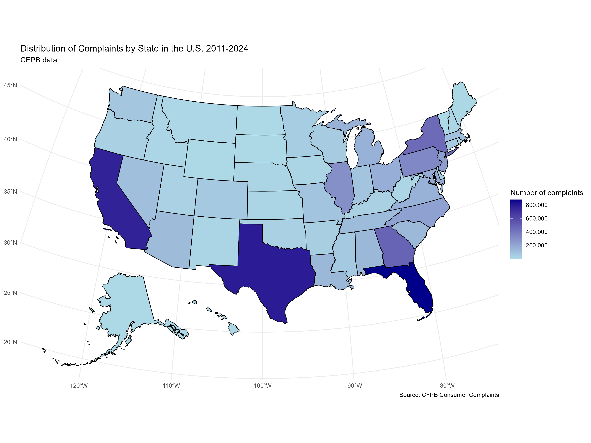

EDA of CFPB Consumer Complaints (2011 – 2024)
Interactive exploration of 6.9 million complaints to uncover product hot‑spots, temporal surges, and state‑level patterns driving consumer dissatisfaction in the U.S. financial sector.
Overview
This Exploratory Data Analysis (EDA) examines 6.9 million consumer complaints lodged with the CFPB from 2011 through 2024. It seeks to uncover when, where, and why U.S. consumers raise issues with financial institutions.
Library Installation
install.packages(c(
"readr", "dplyr", "ggplot2", "scales", "ggpubr",
"gtsummary", "lubridate", "tidyverse", "usmap",
"sf", "maps", "leaflet"))Key packages enable data import (readr), wrangling (dplyr), visualisation (ggplot2), and mapping (leaflet, usmap).
Data Import & Transformation
complaints <- read_csv("complaints.csv")
complaints <- complaints %>%
rename(Date_received = `Date received`) %>%
mutate(Date_received = as.Date(Date_received),
Year = year(Date_received),
Month = month(Date_received, label = TRUE))Standardising dates to YYYY‑MM‑DD allows monthly, quarterly, and yearly aggregations.
Grouping & Aggregation
# yearly counts
yearly <- complaints %>%
count(Year, name = "Number_Complaints")Similar logic produces monthly and quarterly counts, plus summaries by product and state.
Key Findings
- Credit Reporting remains the #1 complaint category (32 %).
- Post‑2020 spike: total complaints doubled compared with pre‑pandemic levels.
- Geographical hotspots: Florida, Texas, and California together generate 27 % of all complaints.
Visual Highlights
- Top 10 Product Categories – bar chart reveals data‑quality issues in credit reports as the dominant pain‑point.
- Quarterly Trend (2011 Q4 – 2024 Q4) – steady rise then acceleration after 2020, likely tied to pandemic‑era financial stress.
- Complaint Map – choropleth pinpoints states with systemic consumer‑finance challenges.

Conclusions
The CFPB dataset highlights persistent issues in credit reporting and debt collection. Geographic analysis shows disproportionate complaint volumes in populous, financially complex states. The pronounced uptick post‑2020 underscores how economic shocks translate into consumer‑finance friction.
Credits
Analysis by Juan Camilo Sierra Escobar, December 2024. Data sourced from the Consumer Financial Protection Bureau (CFPB).